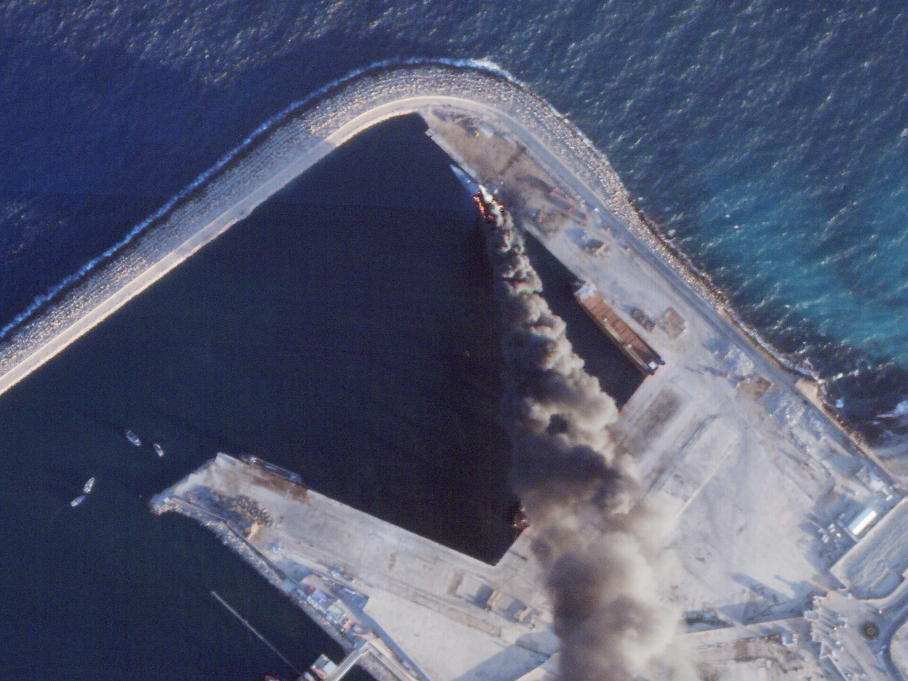

Technology · 24 Nov 2026
Ukraine sinks Russian warship, strikes cargo ships from Mediterranean to Baltic

Russian missile corvette latest casualty as Ukraine strikes back in war at sea.
Multiple independent publishers are reporting on the same development: Ukraine sinks Russian warship, strikes cargo ships from Mediterranean to Baltic.
The available reports place the development in the Technology category. The accounts were compared for agreement on the central event rather than simply shared names or broad topics.
One of the available reports describes the development this way: Russian missile corvette latest casualty as Ukraine strikes back in war at sea.
Readers should consult the linked source reports for additional context, updates and details that may change as the story develops.
Sources
This article was produced by the C. O. Eric AI Newsroom from the cited sources. It is published only after automated evidence and safety checks.